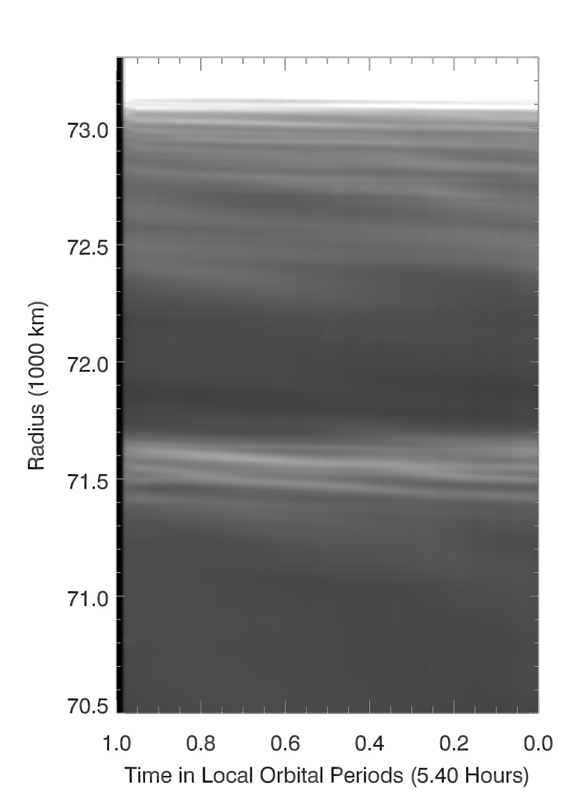
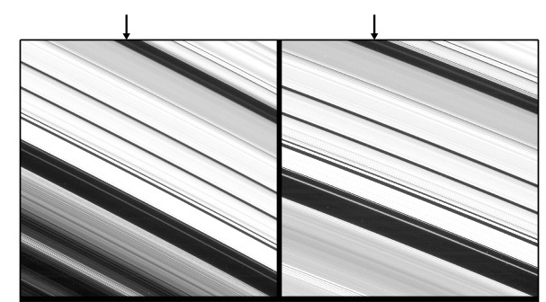
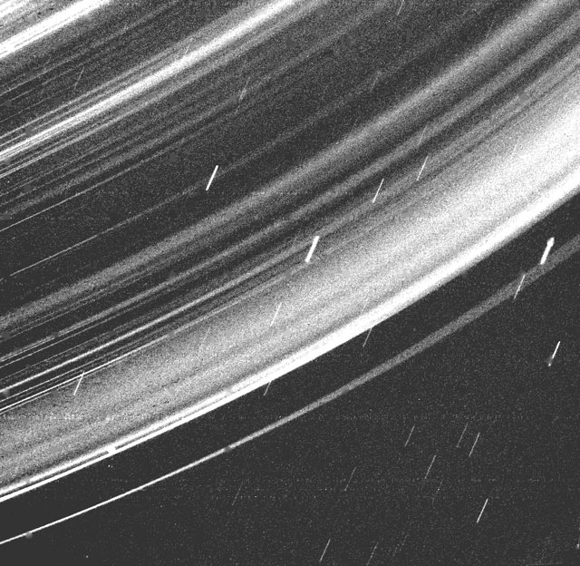

Research Interests
My group is currently involved in a number of research projects using remote-sensing data and numerical tools to investigate dynamic planetary systems. Many of these projects are dedicated to exploring the structure, composition and dynamics of Saturn's rings, but some involve other aspects of the Saturn system, including Enceladus' plume and the planet's interior. We have also been investigating the rings surrounding the Ice Giant Uranus.
Structure and Dynamics of Dense Planetary Rings
Small-Scale Textures in Saturn's Main Rings
Saturn's dense main rings show a diverse array of structures that reflect the
gravitational and collisional interactions between the individual ring particles. For example, competition between mutual gravitational attraction and Keplerian shear
leads to the clumping of particles and the generation of textures with
characteristic sizes well less than one kilometer. VIMS occultation data has allowed allow us to quantify the orientation and shapes of some of these features. In particular, we have found that these parameters change significantly with their location in the ring, which should help us better understand how ring particles clump and interact
in different dynamical environments.
Relevant Publications
M.M. Hedman, P.D. Nicholson, H. Salo, B.D. Wallis, B.J. Buratti, Kevin H. Baines,
R.H. Brown and R.N. Clark. Self-gravity Wake Structures in Saturn's A Ring Revealed by Cassini VIMS.
The Astronomical Journal 133:2624-2629 (2007)
[PDF]
P.D. Nicholson and M.M.Hedman. Self-gravity wake parameters in Saturn's A and B rings.
Icarus 206:410-423 (2010)
[PDF]
Using Rings as Seismometers
Saturn's main rings contain a series of spiral patterns known as density and bending waves that represent the response of the rings to periodic perturbing forces. Most of these patterns appear to be generated at resonances where the orbit period of the ring particles is close to a whole-number-ratio times the orbit period with one of Saturn's moons. However, there are multiple waves in the inner parts of Saturn's rings that are not near any known resonance with any moon. Early investigations of these features using data from the Voyager spacecraft suggested that they might be generated by resonances with normal-mode oscillations inside the planet itself (Marley and Porco, Icarus 1993), but there were not enough data to prove these associations. Using wavelet-based techniques, we have been able to verify that these patterns are indeed generated by structures inside the planet, and therefore can provide new insights into the planet's interior. Furthermore, we found multiplicities of patterns that were not predicted by standard models of Saturn's interior.
M.M. Hedman and P.D. Nicholson. Kronoseismology: Using density waves in Saturn's C ring to probe the
planet's interior.
The Astronomical Journal 146:12 (2013)
[arXiv]
[PDF]
M.M. Hedman, P.D. Nicholson.
More Kronoseismology with Saturn's Rings
Monthly Notices of the Royal Astronomical Society 444:1369-1388 (2014)
[arXiv]
[PDF]
[SOM]
R.G. French, C.A. McGhee-French, P.D. Nicholson, M.M. Hedman.
Kronoseismology III: Waves in Saturn's inner C ring.
Icarus 319:599-626 (2019)
[PDF]
M.M. Hedman, P.D. Nicholson, R.G. French.
Kronoseismology. IV. Six previously unidentified waves in Saturn's middle C ring.
The Astronomical Jounral 157:18 (2019)
[arXiv]
[PDF]
Structure and Dynamics of Diffuse Planetary Rings
Beyond the dense rings, the faint, diffuse rings are also a rich
source of information about particle dynamics and disk evolution.
These low-optical depth rings are particularly interesting because
they consist primarily of particles less than 100 microns across.
Such small particles can be eroded or ejected from planetary
systems on time scales of 1-1000 years, so particles need to be constantly
re-supplied to these rings from various sources. Dusty rings
can therefore respond rapidly and dramatically to small changes
in their environment. Futhermore, the small sizes of the visible particles
in these diffuse rings mean that they are particularly sensitive to a host of
non-gravitational forces such as solar radiation pressure and plasma drag.
Time Variability in the D ring
The ring that shows the most dramatic
examples of variability on short time scales is
the D ring. This is the innermost of Saturn's rings, located
only some 5,000-15,000 km above Saturn's clouds.
When the Voyager spacecraft flew by Saturn in the early
1980s, the brightest feature in this region was a narrow ringlet
dubbed D72. When Cassini arrived twenty-five years later,
this ringlet had transformed into a broader feature that was
no brighter than other ringlets in this region. The cause of
this dramatic change is still unknown.
More recently, a series of bright clumps suddenly appeared in the innermost ringlet in the D ring. This material was probably ejected from multiple larger bodies orbiting close to this ringlet. However, it is not clear why such objects would be concentrated in this particular location. The regular spacing of the clumps suggests that their source bodies cold be in a co-orbital configuration, but a closer look at the system reveals that such a configuration would be extremely fragile. Thus it is more likely that some as-yet-unidentified outside force is trapping objects near this location.
Relevant Publications
M.M. Hedman, J.A. Burns, M.R. Showalter, C.C. Porco, P.D. Nicholson, A.S. Bosh, M.S. Tiscareno, R.H. Brown, B.J. Buratti, K.H. Baines, R.N. Clark. Saturn's dynamic D ring.
Icarus 188:89-107 (2007)
[PDF]
M.M. Hedman.
Bright clumps in the D68 ringlet near the end of the Cassini Mission.
Icarus 323:62-75 (2019)
[arXiv]
[PDF]
J.A. A'Hearn, M.M. Hedman, D.P. Hamilton.
Modeling Saturn's D68 Clumps as a Co-orbital Satellite System
PSJ 2:74 (2021)
[arXiv]
[PDF]

Faint Rings Perturbed by Saturn's Magnetosphere
The dusty rings that lie just inside and outside Saturn's main rings
contain unusual patterns that rotate around the planet every 10-11 hours.
This is close to the same periods seen in Saturn's radio emissions,
so it would appear that something in Saturn's magnetosphere
in perturbing ring particles' orbits at these locations. The tiny dust grains
that populate these regions are particularly sensitive to non-gravitational
forces and therefore it is not unreasonable that the same electromagnetic
disturbances that generate Saturn's radio emissions are also affecting
these rings. However, it is not yet clear exactly how the observed structures
in the rings are coupled to the periodic signals in Saturn's magnetic
environment.
Relevant Publications
M.M. Hedman, J.A. Burns, M.S. Tiscareno, C.C. Porco. Organizing some very
tenuous things: Resonant structures in Saturn's faint rings.
Icarus
202:260-279 (2009)
[PDF]
R.O. Chancia, M.M. Hedman, S.W.H. Cowley, G. Provan, S.-Y. Ye.
Seasonal structures in Saturn's dusty Roche Division correspond to periodicities
of the planet's magnetosphere.
Icarus 330:230-255 (2019)
[arXiv]
[PDF]
The G ring and Other Narrow Dusty Ringlets
.jpg) Prior to Cassini's arrival at Saturn, the G ring was one of Saturn's most mysterious rings. The small dust grains that make up most of the visible G ring should be eroded or removed from the Saturn system on relatively short timescales, and unlike
other dusty rings, there was no obvious nearby source bodies that could
replenish this dust.
Prior to Cassini's arrival at Saturn, the G ring was one of Saturn's most mysterious rings. The small dust grains that make up most of the visible G ring should be eroded or removed from the Saturn system on relatively short timescales, and unlike
other dusty rings, there was no obvious nearby source bodies that could
replenish this dust.
During Cassini's first few years at Saturn, the cameras spied a bright arc near the inner edge of the G ring. The motion of this feature indicated that the material in this arc is confined by a resonance with Saturn's moon Mimas. In-situ measurements showed that this arc contains a substantial population of centimeter-to-meter-sized particles, which were likely the source of the dust that makes up most of the visible G ring. More recent follow-up observations of this arc revealed that it contained a tiny moon, now called Aegaeon, which would be the largest object inhabiting this arc.
Just as Aegaeon seems to be a source for the G ring, Saturn's small moons Anthe, Methone and Pallene also seem to be sources for their own extremely faint rings.
Interestingly, Aegaeon, Anthe and Methone all appear to be trapped in resonances
with Mimas, and all are embedded in arcs of debris that are likely confined by gravitational perturbations from that moon. Comparisons between these different
ring-moon systems can therefore help us better understand how efficiently dust is produced and dispersed in different situations. For example, we have recently investigated how particles trapped in these resonances interact with each other and found that there is a fair chance that both particles can be scattered away from the resonance, which has implications or the stability of these systems.
Relevant Publications
M.M. Hedman, J.A. Burns, M.S. Tscareno, C.C. Porco, G.H. Jones,
E. Roussos, N. Krupp, C. Paranicas, S. Kempf. The Source of Saturn's G Ring.
Science 317:653-656 (2007)
[PDF]
[SOM]
M.M. Hedman, C.D. Murray, N.J. Cooper, M.S. Tiscareno, K. Beurle, M.W. Evans,
J.A. Burns. Three tenuous rings/arcs for three tiny moons.
Icarus 199:378-386 (2009)
[PDF]
M.M. Hedman, N.J. Cooper, C.D. Murray, K. Beurle, M.W. Evans, M.S. Tiscareno, J.A.
Burns. Aegaeon (Saturn LIII), a G-ring object.
Icarus 207 (2010) 433-447
[arXiv]
[PDF]
J.A. A'Hearn, M.M. Hedman, M. El Moutamid.
Dynamics of multiple bodies in a corotation resonance: Conserved quantities and relevance to ring arcs.
ApJ 882:66 (2019)
[arXiv]
[PDF]
Helioropic Ringlets

The widest gaps in Saturn's main rings harbor narrow dusty ringlets. One of these ringlets, found in the Laplace Gap in the outer Cassini Division, appears to be displaced away from the center of Saturn towards the Sun. This displacement manifests itself as systematic variations in the apparent radial position of this ringlet among the various Cassini images (Images taken close to Saturn's shadow show this ringlet to be closer to the inner edge of the Laplace Gap than it is typically observed in images taken of the sunward part of the rings). This "heliotropic" behavior can be explained as the result of solar radiation pressure gently nudging the particles in this ring and perturbing their orbits. Small particles like those found in this ringlet are particularly sensitive to such forces, and the observed magnitude of the displacement is consistent with that predicted for particles roughly 10 microns across. This ringlet thus provides a nice illustration of how non-gravitational forces can sculpt dusty systems
Relevant Publications
M.M. Hedman, J.A. Burt, J.A. Burns, M.S. Tiscareno.
The shape and dynamics of a heliotropic dusty ringlet in the Cassini
Division.
Icarus 210:284-297 (2010)
[arXiv]
[PDF]
M.M. Hedman, B. Bridges.
Changes in a Dusty Ringlet in the Cassini Division after 2010
PSJ 1:43 (2020)
[arXiv]
[PDF]
Corrugations and Cometary Impacts in Planetary Rings
Data from multiple spacecraft missions has now revealed that both Saturn's and Jupiter's rings have been disturbed by impulsive events, probably cometary impacts, within the last few decades.
Images of Saturn's rings taken by the Cassini spacecraft in 2009 revealed strangely periodic brightness variations in the C ring. These patterns were only seen when the Sun illuminated the rings from almost exactly edge-on, and thus represent vertical corrugations similar to those previously found in the D ring. Detailed studies of trends in these corrugations' wavelength demonstrate that they arose from an event in 1983 that slightly titled the rings out of Saturn's equator plane.
Earlier observations of Jupiter's rings by the Galileo spacecraft recorded evidence for similar vertical corrugations. Comparing the wavelengths of these corrugations in images taken by both Galileo and New Horizons showed that this pattern was also changing over time as one would expect if Jupiter's rings had suddenly become tilted sometime in the past. In this case, the tilting event would have occurred in the summer of 1994, around the same time as the comet Shoemaker-Levy 9 was crashing into the planet. This coincidence strongly suggests that Jupiter's rings were tilted material from Shoemaker Levy 9, and subsequent calculations show that sufficient fine debris released when the comet broke up in 1990 could have passed through the rings to produce the observed tilt. Theoretical calculations also demonstrate that Saturn's rings could have been tilted by a collision with a shattered comet as well. If this is correct, then the rings preserve a record of cometary impacts stretching back decades.
Relevant Publications
M.M. Hedman, J.A. Burns, M.W. Evans, M.S. Tiscareno, C.C. Porco.
Saturn's curiously corrugated C ring.
Science 332:708-711 (2011)
[PDF]
M.R. Showalter, M.M. Hedman, J.A. Burns.
The Impact of comet Shoemaker-Levy 9 sends ripples through the rings of Jupiter.
Science 332:711-713 (2011)
[PDF]
M.M. Hedman, J.A. Burns, M.R. Showalter.
Corrugations and eccentric spirals in Saturn's D ring: New insights into what happened at Saturn in 1983
Icarus 248:137-161 (2015)
[arXiv]
[PDF]
M.M. Hedman, M.R Showalter.
A new pattern in Saturn's D ring created in 2011.
Icarus 279:155-165 (2016)
[arXiv]
[PDF]
Particles in Enceladus' Plume
Enceladus' plume consists of vapor and small ice grains launched
from beneath the moon's surface by processes that are still
rather obscure. Spatially-resolved spectra of the plume
obtained by VIMS provide information about the particle
size distribution in the plume, which in turn constrains the
velocity distribution of particles launched from Enceladus'
surface. We have also found evidence that the brightness of the plume
changes significantly as the moon moves around its eccentric orbit, and that different sources produce plumes with different particle properties and different solid-to-gas ratios.
These variations in plume output and properties provide
information about what is going on inside Encealdus.
Relevant Publications
M.M. Hedman, P.D. Nicholson, M.R. Showalter, R.H. Brown, B.J. Buratti, R.N. Clark. Spectral Observations of the Enceladus Plume with Cassini-VIMS.
The Astrophysical Journal 693:1749-1762 (2009)
[PDF]
[Data]
M.M. Hedman, C.M. Gosmeyer, P.D. Nicholson, C. Sotin, R.H. Brown. R.N. Clark, K.H. Baines, B.J. Buratti, M.R. Showalter. An observed correlation between plume activity and tidal stresses on Enceladus
Nature 500:182-184 (2013)
[PDF]
D. Dhingra, M.M. Hedman, R.N. Clark, P.D. Nicholson.
Spatially resolved near infrared observations of Enceladus' tiger stripe eruptions from Cassini VIMS
Icarus 292:1-12 (2017)
[PDF]
M.M. Hedman, D. Dhingra, P.D. Nicholson, C.J. Hansen, G. Portyankina, S. Ye, Y. Dong.
Spatial variations in the dust-to-gas ratio of Enceladus' plume
Icarus 305:123-138 (2018)
[arXiv]
[PDF]
H. Sharma, M.M. Hedman, S. Vahidinia.
New insights into variations in Enceladus plume particle launch velocities from Cassini-VIMS spectral data
PSJ 4:108 (2023)
[arXiv]
[PDF]
K.E. Denny, M.M. Hedman, D. Bockelee-Morvan, G. Filacchione, F. Capaccioni.
Constraining Time Variations in Enceladus's Water-vapor Plume with Near-Infrared Spectra from Cassini's Visual and Infrared Mapping Spectrometer
PSJ 5:144 (2024)
[arXiv]
[PDF]

Surprises in the Uranian Rings
Uranus has its own complex system of rings that consists of nine extremely narrow dense rings and a complex array of dusty ring structures. While these rings were only seen close-up by the Voyager 2 spacecraft during a short flyby in 1986, the limited data currently available can still provide new information about the system. We were able to use earth-based occultation measurements to estimate the mass of one of Uranus' moons, and the high-resolution Voyager data to find evidence for unseen moons orbiting close to two rings. More recently, we found that several of Uranus' dusty rings are surprisingly narrow, suggesting some unknown force is keeping this fine material from dispersing.
Relevant Publications
R.O. Chancia, M.M. Hedman.
Are there moons near the Uranian alpha and beta rings?
The Astronomical Journal 152:6 (2016)
[arXiv]
[PDF]
R.O. Chancia, M.M. Hedman, R.G French.
Weighing Uranus' Moon Cressida with the eta Ring
The Astronomical Journal 154:153 (2017)
[arXiv]
[PDF]
M.M. Hedman, R.O. Chancia.
Uranus's Hidden Narrow Rings
PSJ 2:107 (2021)
[arXiv]
[PDF]